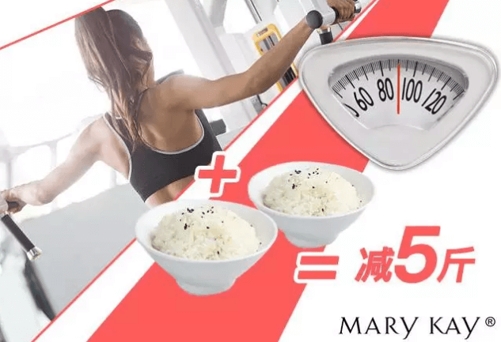

为什么你能管住嘴，体重却不减？
在减肥生涯中，连喝水都长肉的原因并不是你天生自带“胖基因”！
而是和基础代谢率（BMR）相关！ 什么是基础代谢率？是指人体在清醒而又极端安静的状态下，不受肌肉活动、环境温度、食物及精神紧张等影响时的能量代谢率。
如果你每天节食不运动，基础代谢率会降低，吃得再少也不能达到减肥的效果。
如果你每天注重健身，基础代谢率会变高，那么哪怕吃得多，也不会变胖哦！
 由此可见诸如此类的有氧运动不仅能够逐渐提高自身的基础代谢率并消耗身体内的热量，还能使体重明显下降。
慢跑1小时=400大卡
游泳1小时=600大卡
骑车1小时（9km/h）=300大卡
这些食物不仅提供充足的碳水化合物，还富含膳食纤维和维生素B族，提供稳定的热量和饱腹感
每天的饮食遵循少食多餐的规律。三餐的主食中可以选择全麦面包、糙米粥等。
怡日健小黄提醒大家，及时补充膳食纤维，有助促进肠道健康，排出毒素，让“胖基因”无所遁形！
Get了这些小秘诀，
就像拥有了令人羡慕的“瘦基因”，
想不瘦都难！